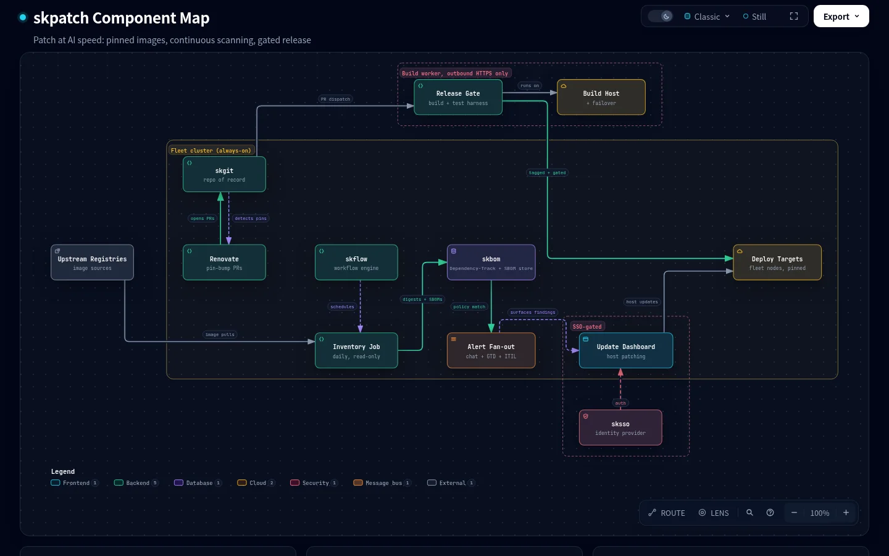
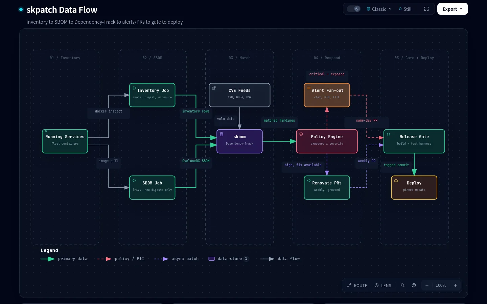
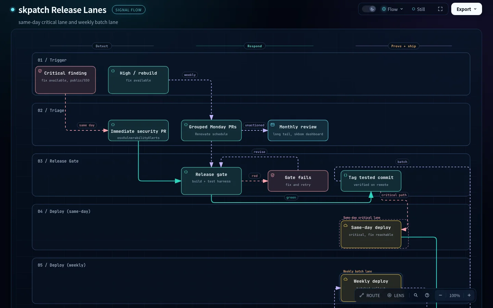

Every image skpatch touches is pinned by digest, inventoried daily, SBOM'd into Dependency-Track, and CVE-matched continuously. Renovate opens the pin-bump pull requests, a release gate proves them before anything ships, and the lane you get depends only on what the finding actually is: same day for a critical with a fix in a reachable service, weekly batch for the rest, monthly review for the long tail.
skpatch is the patching program for a sovereign fleet: hosts and images both, patched on a known cadence instead of by memory. It replaces a hand-rolled vulnerability register with a real SBOM and CVE-matching pipeline, and it replaces "someone noticed" with a scheduled job that runs whether or not anyone is watching.
No service runs a bare :latest tag. Every image is pinned to a SHA-256 digest, so "what's running" is a fact, not a guess.
A read-only job walks every running service: image, tag, digest, and exposure class, public, SSO-gated, or internal, straight from the edge's own routing labels.
Every distinct image digest gets a CycloneDX SBOM, uploaded once and re-matched against CVE feeds continuously, not just on ingest.
Renovate opens the pin-bump pull requests on its own schedule, plus an immediate security PR the moment a stored pin matches a known vulnerability.
Nothing ships because a PR merged. Every change runs the same build-and-test harness before it is tagged and deployed.
The underlying host packages patch through an SSO-gated update dashboard, the same discipline applied one layer down the stack.
The honest version of the pitch is not that skpatch makes a fleet unhackable. It is that "we'll patch it when we notice" stopped being a survivable plan once disclosure-to-exploitation time collapsed from weeks to days.
Automated scanners and agentic tooling can now go from a public CVE number to a working exploit chain, and from a working exploit chain to probing thousands of endpoints for it, inside the same week the advisory lands. They do not get tired, they do not take weekends, and they do not stop at the first failed attempt. A fleet that checks patch status by tag name instead of by what is actually running the binary finds out about a gap only when something goes wrong.
What skpatch does not claim: it does not make a vulnerable service safe to leave unpatched, it does not replace a release gate with a scanner, and same day means same day, not same hour, the gate still takes real time to run. It closes the gap between "a fix exists" and "the fix is running," on a schedule that is actually kept.
Five stages, running on a fixed schedule, feeding one release gate.
Grouped minor/patch/digest PRs on a weekly schedule, majors kept separate, plus an immediate security PR outside the schedule the moment a pin matches a known vulnerability.
Findings that cross the same-day threshold notify through chat and land as a tracked item, keyed by service and CVE, so nothing is only "seen once."
A same-day critical, a weekly batch, and a long-tail cleanup all converge on the identical release gate. Nothing bypasses it except the documented same-day lane, and even that still runs it, just with the deploy allowed to lead on a tactical image-only update.
The lane a finding takes is a function of three things: severity, whether a fix exists, and how exposed the affected service is. Nothing is patched "because someone got to it."
| Finding | Lane |
|---|---|
| Critical, fix available, service public or SSO-gated | Same day: security PR, gate, deploy. A tactical image-only update is allowed with the gate trailing. |
| Critical, no fix yet | Alert immediately, tracked as a waiting-for item, re-checked daily until a fix lands or a mitigation is decided. |
| High, fix available | Weekly batch: grouped Monday PRs, gated deploy later in the week. |
| Upstream rebuild, same tag, new digest | Weekly batch, digest bumps grouped per service. |
| Everything else | Monthly review from the skbom dashboard. |
| Host packages | The same-day/weekly discipline, one layer down: the update dashboard plus unattended security upgrades on every node. |
Honest limit: the release gate takes real time to run end to end, so "same day" means same day, not same hour.
Six moving parts, one convergence point. The repo of record (skgit) is where Renovate opens PRs and where the release gate dispatches from; skflow schedules the recurring jobs; skbom is the SBOM store and CVE-matching engine; the release gate is the one place every change has to pass through; and host patching surfaces through an SSO-gated update dashboard, never a bare shell on a node.

| Component | Role |
|---|---|
| skgit | Repo of record for the framework and every instance. Renovate and the release gate both point here. |
| skflow | Workflow engine (Windmill) running the inventory, SBOM, Renovate, and alert flows on a fixed schedule. |
| skbom | Dependency-Track plus the daily SBOM job: the register that replaced a hand-kept vulnerability list. |
| Release gate | The build and test harness every change proves itself against, on a dedicated worker host with a documented failover. |
| Update dashboard | SSO-gated surface for host-level patching, the same cadence discipline one layer down from containers. |
| Deploy targets | The fleet nodes themselves: always a pinned-digest update, never a floating tag, same-day or on the weekly window. |
Each diagram is a standalone, self-contained HTML page: explorable, with motion, and a dark/light toggle. They open in a new tab.


A plain Markdown version of the component map, which renders directly on GitHub without opening a new tab, lives in the repository README.
skpatch ships through the same release discipline as the rest of the framework: every change, whether a Renovate PR, a same-day security PR, or a manual bump, runs the full build-and-test harness before it is tagged and deployed. The glitch rule (the same stage passes on rerun, with no code change) and status reporting stay exactly as they are for every other change.
skpatch keeps every image and host on the fleet current, on a schedule it actually keeps. sksec guards the edge every one of those services sits behind, and skhub is one of the services it patches. All part of SKWorld, the sovereign AI ecosystem where you own the whole stack, from silicon to soul.